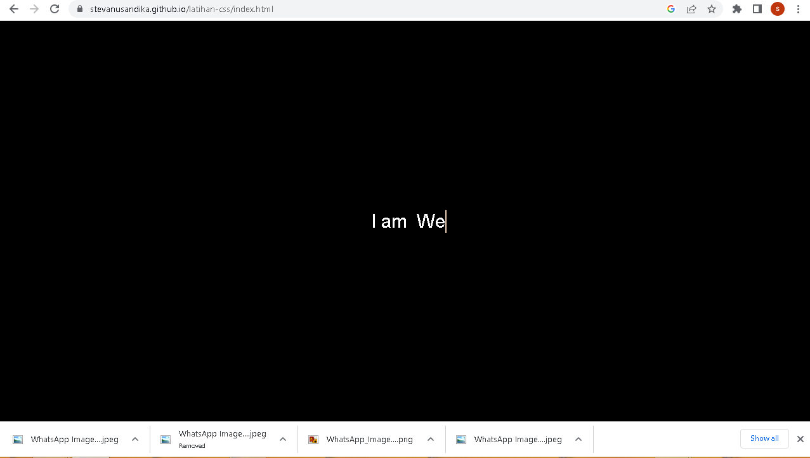
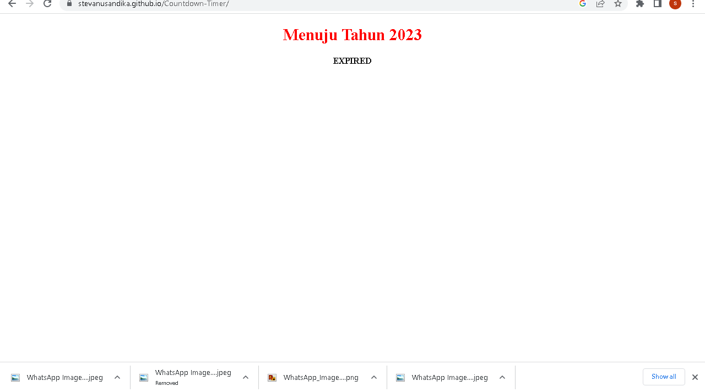

Galeri Portofolio Saya
Berikut Adalah Hasil Portofolio Yang Pernah Saya Buat.
Portofolio Dengan Boostrap
Membuat Portofolio Dengan Boostrap 5
Membuat Tampilan Website Top up
Membuat Layanan Top Up Dengan HTML CSS Javascript

Membuat Animasi Mengetik
Menggunakan library Jquery

Countdown Timer
Dengan Javascript
Previous
1
2
Next